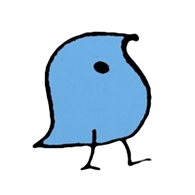
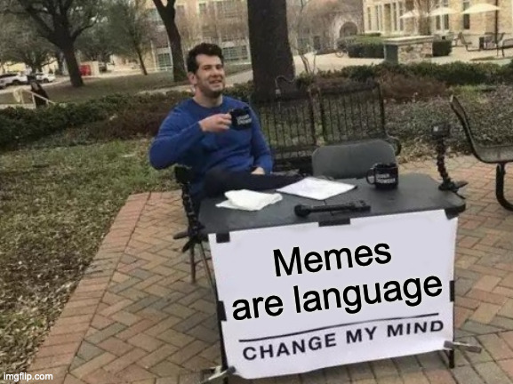

http://savethevowels.org/legacy
To Seth McLaughlin for coordinating the process with me
To my colleagues and students for supporting me and providing feedback
To UCSD’s LingUA for helping get out the vote and classing the place up
This is the highest honor I could receive as a teacher
It means the world to me that you chose me to give this talk
“If this were the last lecture you ever gave, what would you want to share with the world?”
We use language so often that it feels ‘boring’, ‘normal’ and ‘easy’
We stop seeing the complexity
We stop seeing how truly bizarre it is
We stop understanding why people spend lifetimes studying it
I’m going to show you, by showing you that your language is very, very weird
That there is more complexity than most people ever notice
… and yet it still works so well that it feels ‘boring’
That is incredible
More than 7000 languages spoken on Earth
More than than 200 languages spoken here in the US
More than 50 languages spoken in California
Every one of these languages is as complex, fascinating, and incredible as English is!
It’s the most commonly spoken language on our campus
It’s got plenty of fun chaos to make language seem weird!
… but English isn’t the only language which is incredible!
Be thinking about how all these ideas apply in your own languages and dialects!
Speech is incredible
Grammar is incredible
Meaning is incredible
All Language is Incredible
Language is incredible
Cheesy Legacy Lecture Example
We fought through, though rough boughs coughed.
Knight
This thistle
Unionized
‘gh’ from ‘tough’
‘o’ from ‘women’
‘ti’ from ‘fiction’
… and the most vile lie you’ve been told…
Five vile deceptions
They hide from you the true diversity of English vowels
Beet, bit, bet, bat, bird, but, bought, board, book, boot, boy, buy, bay, boat
Other languages have even more vowels than we do!
Individual sounds blend together
Adjacent sounds affect each other
You don’t generally run out of air when talking
‘Sine Wave Speech’ has three sine waves, changing frequency to match the loudest components of speech
Our brain is able to hear speech even here
Incredible!
This is the McGurk Effect
When you see ‘ga ga ga’ and hear ‘ba ba ba’, your mind tries to find the best answer!
This shows that speech perception is ‘multimodal’, and doesn’t just rely on the acoustic signal
Different language background and dialects
Different vocal tract length
Different tongues making different shapes with a different voice
Two different people may produce ‘dead’ and ‘did’ with nearly identical acoustics, and yet you’ll hear them as two distinct vowels
You have never once given a damn!
It’s nothing like our writing system makes us think it is
It’s fluid, continuous, and complex
We are able to perceive speech despite incredible distortion
We use information above and beyond the acoustic signal
They’re is a nice park over their.
Jessica’s a great person to travel with.
There ain’t much good about our writing system in English irregardless of how you look at it.
These are what we call ‘prescriptive grammar’ rules
These ‘Incorrect’ sentences are still understandable
People make these ‘mistakes’ all the time
Some come from older versions of the language or blind adherence to the writing system
Some are arbitrary decisions by those in power as to what is ‘correct’
Try asking ‘How do you know that’s the correct form?’
Linguists don’t worry much about this kind of grammar!
What rules do speakers of this dialect tend to follow when speaking?
What makes language use hard to understand or ambiguous?
How can we describe the patterns that people tend to follow when using language?
How do speakers of different dialects vary in terms of the rules they follow?
These rules describe how people actually communicate, and what makes communication break down
Is what you’re hearing or reading English?
Do you understand what it’s saying?
Can those words ‘go together’ like that?
Does this usage feel ‘illegal’ or ‘not right’ somehow?
Let’s try it!
I’m honored to present to you today.
Jessica succulent porch obsession on growing the has an.
Somebody stole my lamp, I’m delighted.
All your base are belong to us.
Saw the car red
sing -> sang
ring -> rang
bring -> brought
sting -> stung
ding -> dinged
Cats, Mutts, and laughs (ends with /s/)
Dogs, Professors, and Nerds (ends with /z/)
Dishes, washes, and plusses (ends with /ɪz/)
How do we know which form works with which words?

Developed by Jean Berko Gleason in 1958
Designed to show that young children (and adults!) have intuitions about grammatical rules
Let’s see what else you know about creating words in English!
Quieter
Weobleing
slowest
Ari won the 2021 track meet, but Juan had a faster time when he won in 2022.
Lecture
Breaking
Shockingly
I was given this honor by teaching.
‘fasterer’ is better than ‘unblueringlyer’
So, ‘grammatical’ isn’t just ‘yes’ or ‘no’
Will and Jessica went out for Krispy Kreme.
Please to be no eatings I are not tasty or nutritious.
I talked to more people than I recognized them.
I saw the cute black three cats.
| ### The boat floated down the river |
Your brain commits to one potential ‘reading’ of the sentence
Then, when you get that last word, your brain crashes
You have back up and analyze it differently to be able to understand it
The right pitch, timing, and intonation can make it feel OK
Run to the store and grab…
Cheese
M&Ms
Tea
Some avocados
Pine nuts
“More people have been to Mexico than I have”
“More UCSD students post raccoon memes than I do.”
These make zero sense!
These are called ‘Comparative Illusions’, and come from blending two common expressions
These feel grammatical at first
It’s so much more than silly ‘grammar rules’ from pedants
We have strong knowledge of what forms should be used when
We understand that although we have lots of options, we can’t always use all of them
Some of our judgments about language forms are strong and ‘black and white’


We call this a ‘semantic prototype’
Yet, many things which aren’t quite that still feel like ‘truck’
Word meanings are gradient, rather than ‘all or nothing’
… or maybe you’re all just robots
Is one ‘many’?
Is five ‘many’?
Is twenty ‘many’?
To answer this, we must answer a different question
Did ‘many people’ laugh?
Did ‘many people’ laugh if there were 22 people in the room?
Did ‘many people’ laugh if there were 40 people in the room?
Did ‘many people’ laugh if there were 5000 people in the room?
“Never enroll in Will’s classes if you don’t like puns”
“Gonna come visit next week?”
“Give me the enchiladas!”
“You should really declare a linguistics major.”
“Up in the back row, students cringed in anticipation.”
“I saw the Chancellor of UCSD’s Office”
“Will brought the Chancellor up during his talk.”
“I went to the store”
“Oh I saw him!”
“I feel you.”

“Will, who is definitely not Batman, gave a lecture.”
“Dalen sure has been hanging out with Helen a lot lately.”
“I ate some of your donuts”
“Your watch is gone? I wonder if Ryan’s back in town.”
We understand what’s implied without even thinking about it!
Even single words’ meanings can be tricky to pin down
Sentence meaning is easy to understand
Our knowledge about the world is crucial for understanding
… and getting some meaning requires us to make assumptions about the world
There’s no such thing as ‘good’ or ‘bad’ language
Nobody speaks ‘incorrectly’, just differently
Speakers of different dialects don’t have ‘bad grammar’, they just use a different grammar
We believe that all language is valid and fundamentally worthy of study
If somebody’s using a word and somebody else is understanding it, it’s worthy of study
You may have strong instincts about the meaning of ‘yassification’, ‘based’, ‘mid’, and ‘simp’
It’s quite simp to accidentally use words incorrectly
(Yes, that usage was cringe)
We understand slang and find it just as useful as any other language!
Swearing is amazing, and has fascinating linguistic features worthy of study
Emoji use is 100% linguistic (🎉)
Internet-first linguistic forms are fascinating! (e.g. lol, smdh, dni, brb, thx)
Keysmashing (e.g. alkjhsasdklj) is language, with meaning and social implications
uwu is a vawid fowm of winguwistic expweshun ＼(＾▽＾)／

We understand the meaning of meme templates
We are able to move elements of memes around like affixes on words
The methods we use to describe word formation work here too!
Memes have and change meanings like any other linguistic construct

‘Code Switching’ is the seamless blending of two languages within a sentence or utterance by multilingual folks
“Mañana me voy al Price Center to order mis textbooks for next quarter”
Speakers are simultaneously using elements of both languages’ grammars
We also code switch among our many dialects!
Code switching is fascinating, and should be a matter of pride, not shame!
Sign is not just ‘miming’ or ‘spelling out another language with the hands’
If it were just miming, you could understand all the signs!


ASL GIFs courtesy of Dr. Bill Vicars at http://www.lifeprint.com


Their grammars can differ vastly from nearby spoken languages
The same linguistic theories used for spoken languages are useful and used for signed language
Signed languages are just as valid and interesting to study as spoken languages!
Different sounds!
Different word structures!
Different ways to build sentences!
Different ways to talk about reality, time, space, and events!
Every language is just as capable of describing reality as any other language, but every language does it differently!
Every language community can teach us something about how Language works
No language is ‘boring’ or ‘basic’ or ‘primitive’
… and we as linguists can collaborate with communities to help folks to document, teach, and preserve their linguistic heritage
Whether formal or informal, prestigious or unrecognized
Whether new or old, from Dickens or Discord
Whether acknowledged as language or not
Signed or Spoken
Here or anywhere else
You’ll learn how we can make sense of this madness
LIGN 101 is a great place to start (offered every quarter and over the summer)
More info at https://savethevowels.org/lingmajor
OK, OK, back to the actual point
Speech is shockingly complex, and we don’t care
We’re barely aware of our grammar, yet we use it constantly to make fine-grained decisions
We understand nuanced meanings, informed by our understanding of the world
Everybody languages, in different, worthwhile, and valid ways, all of which can teach us about Humanity
Language is worth studying, and a life in language is a life well spent
http://savethevowels.org/legacy has the slides and, eventually, a recording!